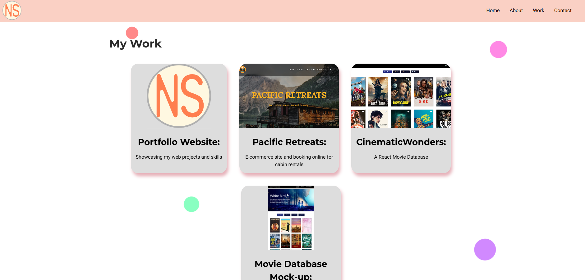
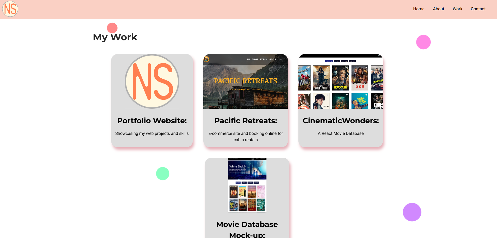

Portfolio Website
 

Project Overview
My portfolio website was designed and developed to showcase my front-end development skills, highlight selected projects, and present my background in a clear, user-friendly format. Built with HTML, CSS, and JavaScript, the site reflects my design sense, coding abilities, and attention to responsive layout across different screen sizes. The goal was to create a simple, clean, and visually appealing space that represents me professionally while offering visitors a smooth and engaging browsing experience.
Project Tools
- HTML
- CSS
- JavaScript
- Figma
- Adobe Illustrator
Project Details
Design
The design process began with a Hi-Fi interactive portfolio prototype I had previously created in Figma during one of my lessons. I modified that prototype to suit this project and decided to go with a single-page scrolling layout for a streamlined user experience. I also designed a personal logo using Adobe Illustrator, which guided my choice of a harmonious color palette to maintain visual consistency. Additionally, I created a content inventory and sitemap, which provided a clear structure and helped guide the development phase effectively.
Development
Once the design was finalized, I moved into the development phase using HTML, CSS, and JavaScript. I structured the content based on the sitemap and implemented the layout to match my Figma design. For styling, I focused on maintaining a clean and modern look while ensuring consistency with the chosen color palette and typography. The website was built with responsiveness in mind, adapting smoothly across desktop, tablet, and mobile screens. GitHub was used for version control, allowing me to track progress and back up work efficiently, and Visual Studio Code served as my primary development environment.
Reflection
This project was both challenging and rewarding. It was the first time I truly reflected on all my past projects, breaking them into distinct design, development, and reflection sections. Managing everything as a solo developer required me to stay organized and balance creativity with technical implementation. It was a valuable experience that helped me grow both as a designer and developer.
Throughout the process, I learned the importance of planning content ahead of time. Creating a sitemap and content inventory proved especially useful during the development phase, giving me a clear roadmap to follow. This structured approach helped me stay focused and ensured consistency in both layout and messaging.
Looking ahead, I would like to explore new tools and platforms to improve my workflow. For future portfolio iterations, I’m interested in using WordPress or a Headless CMS to build a more dynamic and easily maintainable site. This would allow for more flexibility and scalability while improving content management.